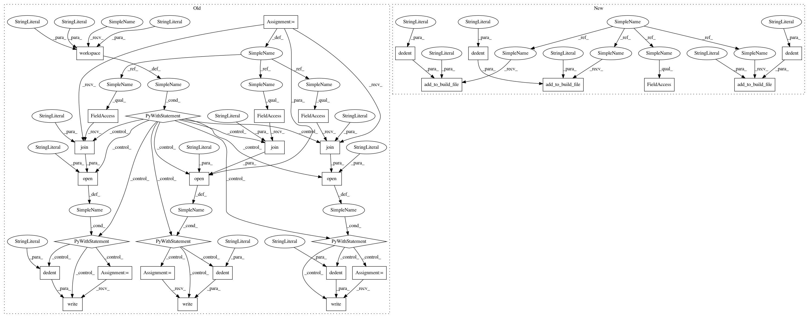

fb69acebcd2b2783dc03913e46ecfa029704f0a8,tests/python/pants_test/base/test_build_file_parser.py,BuildFileParserTargetTest,test_sibling_build_files,#BuildFileParserTargetTest#,135
Before Change
self.assertEqual(len(self.build_file_parser._target_proxy_by_address), 3)
def test_sibling_build_files(self):
with self.workspace("./BUILD", "./BUILD.foo", "./BUILD.bar") as root_dir:
with open(os.path.join(root_dir, "./BUILD"), "w") as build:
build.write(dedent("""
fake(name="base",
dependencies=[
":foo",
])
"""))
with open(os.path.join(root_dir, "./BUILD.foo"), "w") as build:
build.write(dedent("""
fake(name="foo",
dependencies=[
":bat",
])
"""))
with open(os.path.join(root_dir, "./BUILD.bar"), "w") as build:
build.write(dedent("""
fake(name="bat")
"""))
bar_build_file = BuildFile(root_dir, "BUILD.bar")
base_build_file = BuildFile(root_dir, "BUILD")
foo_build_file = BuildFile(root_dir, "BUILD.foo")
self.build_file_parser.parse_build_file_family(bar_build_file)
addresses = self.build_file_parser._target_proxy_by_address.keys()
self.assertEqual(set([bar_build_file, base_build_file, foo_build_file]),
set([address.build_file for address in addresses]))
self.assertEqual(set([":base", ":foo", ":bat"]),
set([address.spec for address in addresses]))
def test_build_file_duplicates(self):
// This workspace has two targets in the same file with the same name.
self.add_to_build_file("BUILD", "fake(name="foo")\n")
self.add_to_build_file("BUILD", "fake(name="foo")\n")
After Change
self.assertEqual(addressable.name, "foozle")
self.assertEqual(addressable.target_type, ErrorTarget)
def test_sibling_build_files(self):
self.add_to_build_file("BUILD", dedent(
"""
fake(name="base",
dependencies=[
":foo",
])
"""))
self.add_to_build_file("BUILD.foo", dedent(
"""
fake(name="foo",
dependencies=[
":bat",
])
"""))
self.add_to_build_file("./BUILD.bar", dedent(
"""
fake(name="bat")
"""))
bar_build_file = BuildFile(self.build_root, "BUILD.bar")
base_build_file = BuildFile(self.build_root, "BUILD")
foo_build_file = BuildFile(self.build_root, "BUILD.foo")
address_map = self.build_file_parser.address_map_from_spec_path(bar_build_file.spec_path)
addresses = address_map.keys()
In pattern: SUPERPATTERN
Frequency: 3
Non-data size: 31
Instances
Project Name: pantsbuild/pants
Commit Name: fb69acebcd2b2783dc03913e46ecfa029704f0a8
Time: 2014-08-12
Author: pl@foursquare.com
File Name: tests/python/pants_test/base/test_build_file_parser.py
Class Name: BuildFileParserTargetTest
Method Name: test_sibling_build_files
Project Name: pantsbuild/pants
Commit Name: fb69acebcd2b2783dc03913e46ecfa029704f0a8
Time: 2014-08-12
Author: pl@foursquare.com
File Name: tests/python/pants_test/base/test_build_file_parser.py
Class Name: BuildFileParserTargetTest
Method Name: test_sibling_build_files
Project Name: pantsbuild/pants
Commit Name: df75d99aa353ecf4dd69185232041c952a3f72b7
Time: 2014-12-03
Author: john.sirois@gmail.com
File Name: tests/python/pants_test/graph/test_build_graph.py
Class Name: BuildGraphTest
Method Name: test_transitive_closure_address
Project Name: pantsbuild/pants
Commit Name: fb69acebcd2b2783dc03913e46ecfa029704f0a8
Time: 2014-08-12
Author: pl@foursquare.com
File Name: tests/python/pants_test/base/test_build_file_parser.py
Class Name: BuildFileParserTargetTest
Method Name: test_sibling_build_files_duplicates